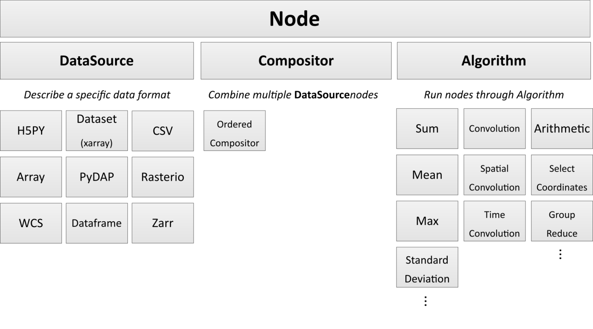
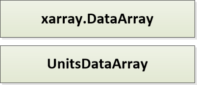
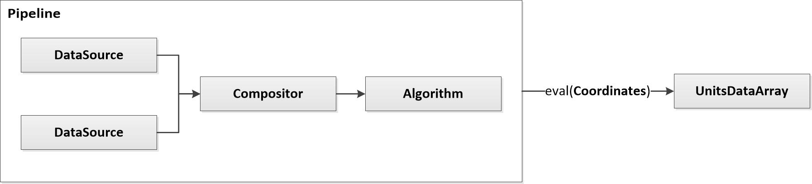

Design
> Text and figures highlighted in orange are still in development
Concepts
The primary concepts in PODPAC are Node, Coordinates, UnitsDataArray and Pipelines. The following sections describe the class hierarchy associated with each concept.
Node
Nodes describe the components of your analysis. These include data sources, combined data sources (Compositors), algorithms, and the assembly of data sources. Nodes are assembled into Pipelines, which can be output to a text file or pushed to the cloud with minimal configuration. Nodes are designed to FAIL ON EVAL, not fail when instantiated. This is in order to defer expensive operations till the user really wants them.
{kind=link}
Coordinates
Coordinates describe the data structure and dimensions of data within a Node.
PODPAC is limited to 4 coordinate dimensions: lat, lon, time, and alt.
{kind=link}
UnitsDataArray
UnitsDataArray is the format of all Node outputs. This is a light wrapper around the xarray.DataArray class to include attributes for units, coordinate reference systems, and other geospatial specific properties.
{kind=link}
Pipelines
Pipelines are assemblies of Nodes that can be evaluated at any PODPAC Coordinates. Pipelines can be very simple, like a single data source evaluated at arbitrary coordinates:
{kind=link}
Pipelines can also be complex, like two data sources being combined into an algorithm:
{kind=link}
Pipelines are note explicitly implemented, but this functionality is available through Nodes.To see the representation of a pipeline use Node.definition. To create a pipeline from a definition use Node.from_definition(definition).
Repository Organization
The directory structure is as follows:
dist: Contains installation instructions and environments for various deployments, including cloud deployment on AWSdoc: Sphinx based documentationpodpac: The PODPAC Python librarycore: The core PODPAC functionality – contains general implementation so of classesdatalib: Library of Nodes used to access specific data sources – this is where the SMAP node is implemented (for example)alglib: Library of specific algorithms that may be limited to particular scientific domains